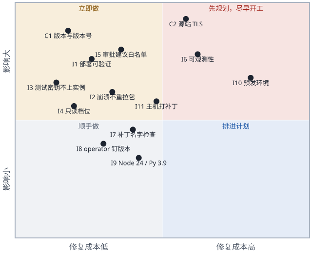

进展（本文是 2026-10-17 的评审记录，结论和条目不改；后来的进展记在这里）：
- 2026-10-18：审批流的调用密钥改为从页面上的启用记录读（I6 里的那个具体问题已解决）。
- 2026-10-19：I1 已修好：
deploy.sh检查 SSM 的执行结果，不是Success就报失败。实例升级为测试台（t3.large、本机 MySQL 8.0、九安运行时），测试台的最终评审另有 3 个 Important，已修好；12 个 Minor 记在交接文档第 6 节。单元测试现在 266 个。
1. 结论
- 作为 PoC，可以交接维护：模块边界清楚、应用层安全做得细、测试覆盖好；单元测试 209 个、命令行测试 6 个全部通过（本机离线，约 2.5 秒）。
- 作为生产，还不能上：2 个 Critical、11 个 Important。最要紧的是：没有版本管理和版本标识；CloudFront 到源站是明文 HTTP；部署脚本在没部署成功时也可能报成功；值班看不到问题（例如 2026-10-17 审批流因为调用密钥失效而全部失败，健康检查却一直是 200）。
- 并入九安时，第 4 节的清单和以补丁和独立模块的形式并入九安一起看。
评审范围：poc/app/（服务端、前端扩展、脚本、测试）、skills/agent-access/、poc/infra/（模板、deploy.sh、destroy.sh，不含
secrets.env）。九安开发包只作参考读，没有执行。注意：单元测试会经
jiuan.mjs 导入并运行九安的服务端代码，CI
上跑测试等于执行第三方代码，CI 环境里不要放 AWS 和 Nexus 的凭据。
2. 做得好的
- 模块图干净：没有循环依赖；三个插件（
approval/、access/、nexus/）互不导入，只用组合根注入的函数；approval/workflow.mjs是纯状态机，带轮次保护，丢弃上一轮迟到的回调。 - 只有一个九安入口：全部经
jiuan.mjs导入，不改九安任何文件；前端锚点要求出现次数精确，构建测试还核对九安analysis.js的哈希没变。 - 应用层安全细致：
- 所有接口都在九安的会话、Origin、CSRF 检查之后，每个接口都用
onlyFields/onlyQuery严格限定字段； - 密钥只经标准输入或环境变量传递，返回里只有指纹，AES-256-GCM 用随机 IV；
- A2A 地址钉在 Nexus 同源，读名片、验密钥都带
redirect:'error'； - 附件按文件头核对类型；页面 CSP 是
script-src 'self'，前端不用innerHTML。
- 所有接口都在九安的会话、Origin、CSRF 检查之后，每个接口都用
- 并发处理到位：同一账号的写操作排队，先写临时文件再改名；
putIf防止「验证期间被停用，验证完又写回去」。 - 基础设施的基本面对：安全组只放 CloudFront
回源前缀列表，不开 SSH；EBS 加密；实例角色明确禁止读 SSM 参数；systemd
带
NoNewPrivileges、ProtectSystem=strict。 - 测试与接口：业务逻辑有对着假 A2A
网关的接口级覆盖；基础设施的约束有测试；端到端测试检查命令行输出里没有密钥；
agent-access-v1有稳定的错误码和「只增不改」的规则。
3. 发现的问题
3.1 Critical
| 编号 | 问题 | 位置 | 为什么要紧 | 怎么改 |
|---|---|---|---|---|
| C1 | 没有版本管理，也没有版本标识 | 整个目录不是 Git
仓库；构件只按时间命名（poc/）；/
报的是九安的版本，不是 PoC 的；operator
脚本从另一个仓库不钉版本地拷进来（deploy.） |
接手的人说不清线上跑的是什么，看不了改动，也没法有把握地回滚 | 立即建 Git 仓库，按现在线上那个包打基线标签；构件名和
/ 带上「提交号 + 包的
sha256」，deploy. 部署后核对 |
| C2 | CloudFront 到源站是明文 HTTP，走公网 | poc/（OriginProtocolPolicy: http-，源站是公网
EIP） |
这一段上明文传着登录口令、会话 Cookie、用户粘贴的
nxc_ API 密钥和 nxa_
调用密钥、附件；生产上还会有财务单据。现在只靠 Host
检查把源站和这个分发绑在一起 |
源站走 HTTPS（ALB + ACM 证书，或 CloudFront VPC 源站）；再加一个只有 CloudFront 知道的源站校验头，应用检查它 |
3.2 Important
| 编号 | 问题 | 位置 | 后果 | 怎么改 |
|---|---|---|---|---|
| I1 | deploy. 没部署成功也可能报成功 |
deploy.
先传包和密钥；:122 的 ssm wait … || true
吞掉失败，SSM 的状态只打印不检查；:126-
的健康检查分不出新旧版本 |
安装命令失败时，旧进程照样通过健康检查，脚本退出
0；更糟的是新包已经是
current.，下一次重启（崩溃、重启机器、run.
重启服务）就会带着旧的
/ 上线 |
SSM 状态不是 Success、或 /
返回的版本不对，就失败退出并打印回滚命令；包传到不可变的
releases/，最后才改指针 |
| I2 | 每次服务启动都重新拉包，崩溃循环会毁掉回滚点 | 模板 :209 的 ExecStartPre 每次
Restart=always 都会跑；:182- 每次都
rm previous; mv current previous; mv 新包 current |
坏版本崩溃循环两次，previous 也变成坏版本；交接文档里「/
是上一版」并不可靠 |
版本号和已装的一样就不换；更好的做法是把拉包从
ExecStartPre 挪到部署命令里，按部署指定的版本装 |
| I3 | 只给测试用的真凭证被装到了公网主机上 | deploy. 上传整个
secrets.：含
E2E_、E2E_（没用过的
nxc_，等于一个新的 Nexus 身份）、旧的
NEXUS_ |
这些落在实例的
/（应用组可读），并一直留在
s3:/（S3
托管加密、没有版本） |
服务端的文件按白名单生成（两个口令、REGISTRY_、NEXUS_）；端到端测试的密钥放另一份只在本机的文件；改用
SSE-KMS |
| I4 | 没有强制 Nexus 连接用只读档位；CLI 的凭证明文落盘 | access/ 读了 preset，但
connect（:115-）没检查；页面只说「只读档位就够」；operator
CLI 把轮换后的凭证明文写在
users/，REGISTRY_
加密管不到它 |
用户粘贴一把可写档位的密钥，主机上就留下一个能写 Nexus 的凭证 | preset 不是 read_
就拒绝连接并立刻让 CLI 退出；并入九安时这类凭证用信封加密存库 |
| I5 | 调用测试的「审批建议」模式，会把九安单据的事实发给用户启用的任何 Agent | nexus/；治理检查（nexus/）是一份全局策略，来自
PoC
的种子数据（nexus/），不看数据发到哪个发布 |
生产上，看得到单据的人可以把整张单据的事实发给自己建的、带任意工具和模型的
Agent，绕开九安受管的 ai- 连接器 |
「审批建议」模式只允许发给管理员维护的发布白名单（或只允许系统提供的 Agent） |
| I6 | 值班看不到问题 | 日志只有错误码（server.）；Nexus
调用失败、CLI
失败、标记失效、连接与启用的结果都不记；没有请求日志、指标、告警；日志只在实例上；健康检查只看是否就绪（poc-） |
2026-10-17 的真实情况：审批流用的那把调用密钥失效，每次审批都以
AI_ 失败，健康检查还是
200，日志里什么都没有（2026-10-18
起审批流改为从页面上的启用记录里读密钥，这个具体问题已解决；看不到问题这一点还在） |
每个请求、每次 Nexus 调用记一行
JSON（接口、状态、账号哈希、发布、密钥来源、错误码、用时，不含密钥）；送
CloudWatch；定时用
tasks/（不花钱）探测审批流会用到的那把调用密钥，结果放进
/ 和指标；健康、5xx
比例、AI_ 比例设告警 |
| I7 | 前端补丁的检查只看锚点和语法 | 注入的代码依赖 analysis. 里约 20
个私有名字（resetSession、loadPage、bootstrap、element、state.…）和补丁位置上的局部变量（body、request、onAccessLost、result、revision）：scripts/；测试只跑
node -（test/） |
九安在锚点之外改了这些名字，构建和单元测试都是绿的，页面上线才抛
ReferenceError，只有部署后的端到端测试能发现 |
加一个单元测试：每段替换代码用到的名字，在打完补丁的文件里都有声明（把并入九安第 4.3 节的人工检查自动化） |
| I8 | operator 脚本是没钉版本的供应链依赖，也没有合同测试 | 从开发者的主目录拷（deploy.）；没有测试运行真的
nexus.（test/
用桩，server. 指向不存在的路径） |
PoC 依赖它的退出码（3/6/7/8）和 JSON
形状（user.、connection.、data.）；一变，用户只看到「连接出错」 |
按固定的 CLI 版本放进仓库，deploy. 核对
sha256；加一个对着本地 HTTP 桩的合同测试 |
| I9 | 测试关卡不在生产的运行时上跑 | 本机是 Node 25、Python 3.13；实例是 AL2023 的 nodejs24
和 Python 3.9（agent_ 和
nexus. 的下限） |
用了新版本才有的语法或接口，本机全绿，线上才出错 | 单元测试在 Node 24、命令行测试在 Python 3.9 上跑（例如容器里） |
| I10 | 唯一的集成关卡是在唯一的线上环境跑端到端测试 | run.
会重启线上服务，清掉所有人的会话和审批；用的是和本人共用的账号（已经发生过测试停用本人启用项的事）；「跳过」被当作通过（「4
通过、6 跳过」被接受过）；断言和 Agent
输出、提示词版本绑死（test/）；用例之间有顺序依赖；栈名、域名、模板缺省值（VPC、托管区、证书）都写死在一个账号里 |
没法有第二套环境；测试结果不可信 | 栈名和域名改成参数，建预发；发布前的那次运行里「跳过」算失败；期望的提示词版本从
knowledge-
读；端到端测试用专门的账号 |
| I11 | 主机从不打补丁 | AMI 在建栈时就固定了（模板
:32）；dnf install 只在第一次启动跑；没有
Patch Manager |
面向公网、运行第三方代码的主机，会在交接后继续跑很久 | 用 SSM Patch Manager 或定时 dnf upgrade，并写好换 AMI
的步骤 |
3.3 Minor
| 编号 | 问题 | 位置 |
|---|---|---|
| M1 | 文档和界面文案过时：架构文档说应用「每次需要时都重读」secrets.，其实只在启动时读（server.，改了要重启，本次已改正文档）；nexus-
提到已不存在的
/；界面文案还在让最终用户去改
infra/（nexus-、nexus-，以及第
7 节里的 :358） |
见左 |
| M2 | 接口耗时可能超过 CloudFront 的 60 秒：每次 CLI 调用最长 30
秒（nexus/），过期的
GET / 串起来最长约 65 秒，connect
再加一次登录约 95 秒；用户看到 504，服务端还在跑 |
access/；建议先返回旧快照、后台刷新 |
| M3 | 重复的小工具，行为还不一样：发布编号的正则定义了四处（加上模板）；三个
codeOf、三个计数方式不同的限流器；sameOrigin
两处；LOGIN_（nexus-）重复了
accounts. |
login.、invoke.、me.
等 |
| M4 | 基础设施加固：没有显式的 IMDS
设置（HttpTokens: required、跳数 1）；出站全开；桶没有
aws:SecureTransport 拒绝、没有版本，归档 14
天过期（回滚目标可能消失）；CloudFront 没有访问日志、WAF 限速、HSTS |
模板 |
| M5 | 验证密钥和真正调用可能是两个地址：启用时对
publication.
验证（同源下任意路径），调用时固定用
/ |
access/ |
| M6 | 内存缓冲没有上限：流式回答无限增长（a2a-）；调用测试的请求体最多约
16 MB
先读进内存（http.），解码之后才限流 |
invoke. |
| M7 | 关服务时不中止正在进行的 Nexus 调用：每次部署或端到端测试重启，都可能留下已计费但结果丢失的调用 | server. |
| M8 | 交接时的杂物：get_（把一个 SSM
参数复制到剪贴板，和这个栈无关）、poc/（原始提示词笔记）、poc/（旧的）、目录里的
test/ 和生成的
app/、. |
见左 |
| M9 | 很长的行（200–400 字符）和紧凑的一行式写法，审改动很吃力 | access/、poc-、build-
的 PATCHES；进 Git 后加格式化工具 |
4. 上生产前必须改的（按顺序）

- 版本：Git 基线；构件和健康检查带版本号；部署后核对（C1）。
- 传输加密：CloudFront（或主机的入口）到源站走 TLS，加源站校验头（C2）。
- 持久化：审批记录、运行记录、限流放进九安的 MySQL
存储（
compareAndWriteState已有，J/src/mysql-analysis-store.mjs:485）；运行记录带公司、按公司过滤（并入九安第 8 节第 6 条）。 - 每个账号的 Nexus 数据：从文件 + CLI 改成数据库 +
信封加密，按
principalId的哈希作键（九安生产是 Docker + MySQL，容器磁盘不持久，多个任务还会争抢轮换的凭证）；强制只读档位（I4）；先和 Nexus 确认凭证轮换的协议。 - 去掉 PoC
脚手架：口令登录、种子数据、内存存储、
accounts.mjs；exchange(…, {loopback:true})的绕过（poc-app.mjs:77）；接管请求监听器的做法（poc-app.mjs:85-86）；审批角色改由主机配置。 - 模型调用走九安的
ai-model连接器（J/providers/ai-model.mjs，并入九安的 S4）；治理范围按主机配置生成，不再来自seed.mjs。 - 「审批建议」模式的发布白名单（I5）。
- 密钥：服务端和测试的密钥文件分开（I3）；静态加密用
KMS；密文格式里带密钥编号，
REGISTRY_KEY才能轮换（现在的v1.只是格式版本）；上生产前统一清理交接文档第 2.5 节列的旧凭证（开发测试阶段密钥用到过期，不主动吊销）。 - 可观测性：结构化日志、CloudWatch、告警、调用密钥探测（I6）。
- 流水线：部署可验证（I1）；崩溃不重新拉包（I2）；预发环境（I10）；Node 24 / Python 3.9 的测试关卡（I9）；operator CLI 钉版本（如果还保留它，I8）。
- 主机：打补丁、IMDS、出站、WAF / HSTS、访问日志（I11、M4）。
5. 维护热点（最先坏的地方）
- 前端锚点补丁（
build-public.mjs:16-80）：analysis.js上 18 个锚点、约 20 个私有名字、补丁位置上的局部变量；九安一升级就要动，其中一部分只在运行时才暴露（I7）。而且基线是裁剪过的测试副本，补丁未必能打到九安真实的代码上。 - 没有文档的九安内部行为：
nexus/advisory-input.mjs靠注入一个抛AI_CANCELLED的模型客户端来截获输入；approval/runner.mjs依赖readCurrent的形状（precheck.checks、ruleTrial.items）和建议记录的字段；memory-store.mjs照着 MySQL 存储的接口仿写。
- operator CLI 的合同和 Nexus 凭证轮换：出问题时只显示「连接出错」。
- 实测一次就写死的 Nexus 行为：
tasks/get的语义（access/verify.mjs）、错误码映射、附件类型的交集、因为旧 ALB 模板定下的 6 MB 上限。 - 端到端测试和提示词文字、版本号绑在一起：知识 Agent 的提示词每升一版，测试就要改。
- 调用密钥的生命周期：审批流用的那把失效后，审批无声地失败（2026-10-17 发生过；现在会自动换用系统里下一把可用的，但都失效时仍然无声）。
6. 对部署与迭代规则的建议
已经写进部署与迭代规范的不再重复，这里是评审额外建议的：
deploy.sh拒绝从有未提交改动的目录发布；版本号 = 短提交号 + 包的 sha256；包传到不可变的releases/<版本>.tgz再改指针。- 只有 SSM 状态是 Success、且
/poc/healthz返回预期的版本号，部署才算成功；否则非零退出并打印回滚命令。 - 实例只装部署指定的那个版本；崩溃重启不重新下载，也不轮换
previous。 - 单元测试关卡在 Node 24 和 Python 3.9 上跑。
- 改基础设施、升九安、升
Nexus，先上预发；预发绿了才在线上跑端到端测试，发布那次「跳过」算失败；
run.sh重启线上之前先通知用户。 - 服务端的密钥文件按白名单生成；端到端测试的密钥不离开本机；每次轮换都记录。
- 每个九安版本一个补丁目录；补丁里用到的名字自动检查；跑全部端到端测试。
- operator CLI 放进仓库并钉版本，只和通过的合同测试一起升级。
- 推送和打标签前：端到端测试完成、项目负责人确认。现在
deploy.sh本身就是「推到线上」，所以这条规则要等有了预发才真正有意义。
7. 第一期最终评审的遗留
第一期（2026-10-17）的整体评审有 2 个 Important，都已修复并有测试：
- Nexus 暂时连不上时，页面和命令行不再说「没连接」、不再引人去换新的
API 密钥（502
POC_NEXUS_UNREACHABLE，出错的列表只缓存 5 秒，错误状态下有「刷新」「断开」）； - 停用不会被一次还没结束的重新验证撤销（
store.putIf；卡片上一个操作没结束时其他按钮都不能点）。
留下的 12 个 Minor：
- 连接时登录成功、列表失败：返回 502，但一次性的 API 密钥已经用掉，连接时间和留痕没记；
- CLI 锁超时、Nexus 限流在连接时被报成「API 密钥无效」；
- 「断开」不检查 CLI 退出登录是否成功；
- 401 后标记失效没有和那把密钥的指纹绑定；
- 启用时先读能力清单再保存（和设计第 4 节的顺序相反），读清单的超时 120 秒大于 CloudFront 的 60 秒，重新读失败会把原来的清单清空；
- 403 也算密钥无效（计划里自相矛盾；Nexus 不会回 403）；
- 命令行：
login接受远端的http://地址，发布编号、运行编号不经校验拼进路径，argparse 的报错没过脱敏； - 从 Nexus 读回来的发布编号没有校验格式；
POST /me/refresh没有限流，每次起 3 个 Python 进程；deploy.sh追加REGISTRY_KEY前没确认文件以换行结尾；- 过时文案：调用测试空状态还写着「在 infra/secrets.env
填好调用密钥」（
nexus-invoke.js:358），两处注释提到已删掉的「刷新」； - 实例上旧的共享 CLI
凭证（
/var/lib/andon-finance/nexus）还是一个有效的 Nexus 连接。
8. 没有评审的
- Nexus 那边的行为（凭证轮换、
tasks/get的语义、会话保留期）：离线、没有 Nexus 源码时无法核实。 - 裁剪过的九安开发包和九安真实代码的差距：拿不到真实代码库（并入九安第 1 节已标出）。
- 线上 AWS 资源和模板的漂移（CloudFront、ACM、Route 53、桶）：评审时不允许访问 AWS。
- 知识 Agent 提示词的质量、费用数字：不在范围内，离线也无法核实。